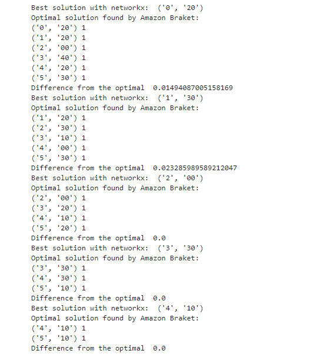

Quantum Computing -based Optimization for Sustainable Data Workflows in Cloud Infrastructures
Created by Valter Uotila (Qumpula Quantum)
Motivation
Data centers create huge carbon footprint
Google has developed a Carbon Footprint tool which enables an individual user to track their computing emissions in detail
This work is inspired by the possibility to access such data
Problem definition
Assume a user provides a workload consisting of multiple data science and data management tasks
Assuming that we can estimate the emissions, how should we divide the workload among the data centers so that the total carbon footprint of the workload is minimized?
Solution in theory
The formalized problem is simply solved by finding the shortest path in a weighted graph
Problem is formalized as a QUBO where the binary variables are work-data center pairs $(w_i, d_j)$. If the variable is 1, the work $w_i$ should be executed in the center $d_j$.
We introduce two simple constraints: every work must be executed on some data center and the emissions are minimized
Implementation
The QUBO is implemented with
- the Ocean software than can be solved on Amazon Braket and
- with Qiskit that can be run on IBM Quantum systems
More details in the jupyter notebook on Github
Results
Quality of quantum computing based solution is compared to the classical method
More details and results in the paper draft on Github
Results
Future work
Collecting the results and presenting it as an interesting demonstration of quantum computing and sustainability to the database community
Finding automatically correct scaling values for the constraints
Me and my colleagues are also researching other interesting optimization and machine learning problems on quantum computers!